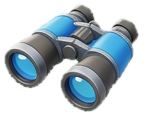
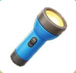
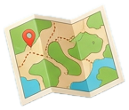
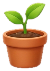
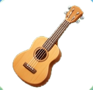
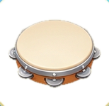
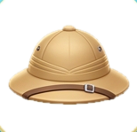

Guardando, ganha +1 a cada 10 (sempre igual). Pode tirar quando quiser.
Mudou de ideia? Desfaz em 24 h.
Para que serve?
Todos
Explorar
Cuidar da vila
Música
Brincar
MO·CHI·LA
levar os achados da trilha
É seu
Meta do cofrinho
LU·PA
explorar o Cerrado de pertinho
24

BI·NÓ·CU·LO
ver o tucano na Mata Atlântica
28

LAN·TER·NA
ler a placa dentro da gruta
20

MA·PA
achar o caminho da vila
14
RE·GA·DOR
regar a horta da vila
16

MU·DA
plantar um ipê na praça
12

VI·O·LÃO
tocar no coreto da festa
30

PAN·DEI·RO
entrar na roda de música
18

CHA·PÉU
proteger do sol do sertão
12
Sem sorteio nem caixa-surpresaPreço fixo, igual para todosNada some, sem pressaSem joias nem enfeitesItem não dá vantagem na liçãoSem dinheiro de verdade